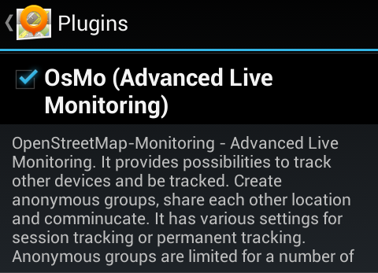

OsMo Plugin
OSM Advanced Live Monitoring plugin provides variety of features. It could be compared with Google Latitude or with other live services. It helps

Supports GPX/KML import (convert from KML to GPX)
GPX tracks has moved to 'My Data'
Detailed stats / split GPX track by distance and check altitude difference/speed
Auto start navigation after delay
Changed layout of countries for downloads (support local names search)
More configuration for navigation view (autohide buttons, speek in advance)
Zoom buttons on planning screen (configuration)